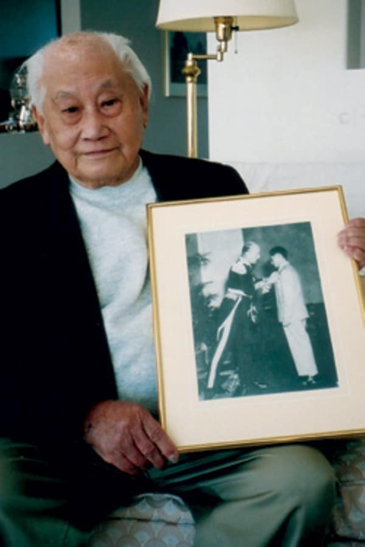

William “Bill” Gun Chong

Reference
Life Story
/
Contribution
/
Achievement
/
Reference
https://en.wikipedia.org/wiki/Bill_Chong
https://www.canada.ca/en/canadian-heritage/ campaigns/asian-heritage-month/noteworthy-figures.html"
https://prezi.com/zrgemcjbiofc/william-bill-gun-chong/
https://www.warhistoryonline.com/guest-bloggers/bill-chong-agent-50.html
https://www.rcinet.ca/patrimoine-asiatique-en /2019/05/08/canadian-secret-agent-and-hero-william-gun-chong//
http://www.vmacch.ca/beta/chinese_history_in_canada .html
https://en.wikipedia.org/wiki/Pacific_Star
https://en.wikipedia.org/wiki/1939%E2%80%931945_Star
https://historycollection.com/agent-50-the-heroic-spy-who-saved-hundreds-from-japanese-clutches-in-wwii/3/
https://en.wikipedia.org/wiki/British_Empire_Medal#:~: text=The%20British%20Empire %20Medal%20is,of%20the%20British%20Empire%20itself.